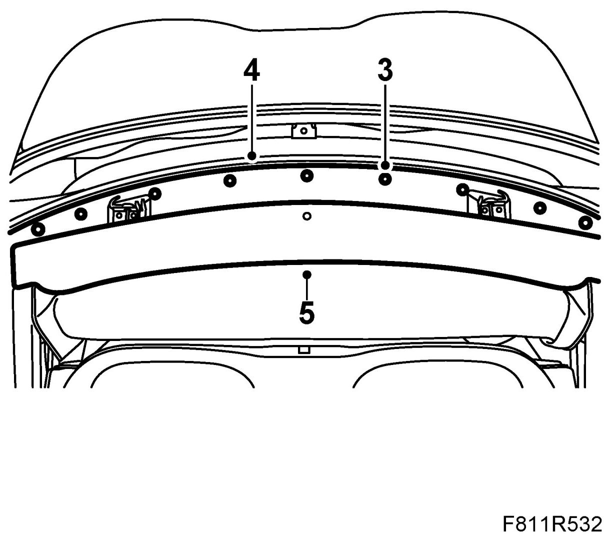
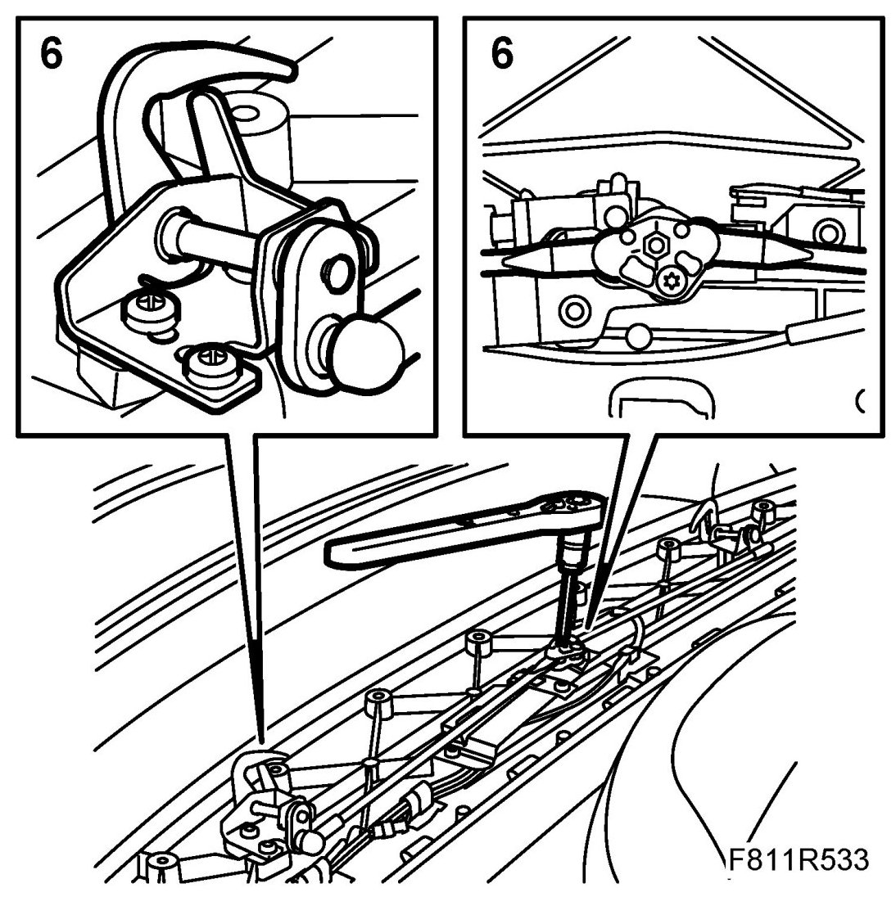
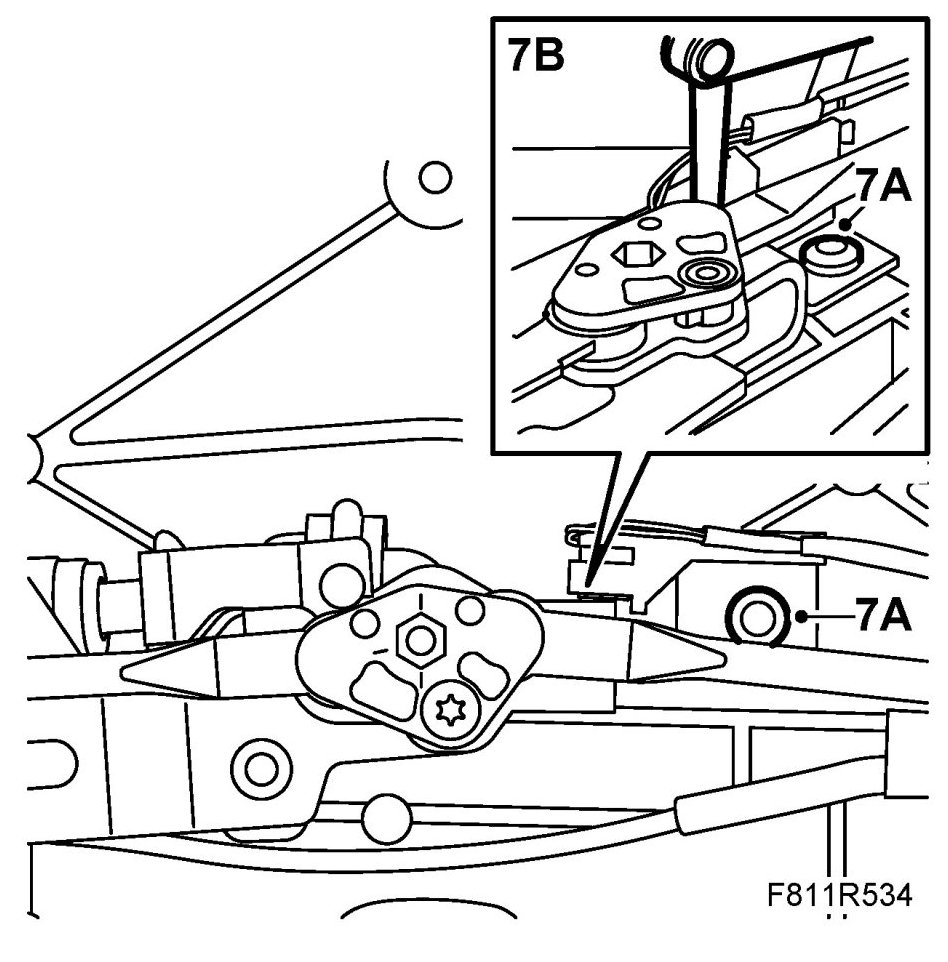
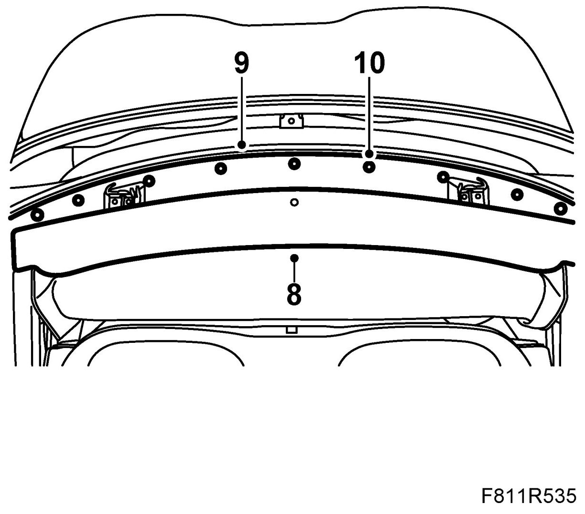

Convertible Top Position Sensor / Switch: Adjustments
Adjustment Of Position Sensor, First Bow Locked (561c)
Adjustment and checking of position sensor, first bow locked
1. Open the boot lid and take out the emergency operation tool.
2. Open the soft top and leave the soft top cover open.
3. Remove the cover plate clip.

4. Remove the cover plate.
5. Remove the front cover by pulling it backwards.
6. Lock the lock hooks by using the emergency opening tool. The lock hooks must be in fully locked position.

7. Check the measurement between the sensor and the drive control using a feeler gauge. The measurement must be 0.7 mm. Adjust if necessary as follows:
7.A. Unscrew the sensor's screw.
7.B. Use a feeler gauge to set the correct measurement between the sensor and the drive control. The measurement must be 0.7 mm.

8. Fit the front cover.

9. Fit the cover plate.
10. Fit the cover plate clip.